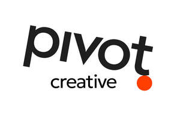

Trade Mark Journal No.2025/032 8 August 2025
UK00004239298 25 July 2025 (35)

- Class 35
- Targeted marketing; Research services relating to advertising and marketing; Advertising and marketing consultancy; Affiliate marketing; Direct marketing; Product marketing; Internet marketing; Direct marketing consulting; Marketing advice; Planning of marketing strategies; Referral marketing; Business marketing consultancy; On-line advertising and marketing services; Event marketing; Marketing research; Online marketing; Marketing analysis; Advertising and marketing; Marketing; advertising; and promotional services; insight-led marketing; Advertising; promotional and marketing services; Advertising; marketing and promotional services; Advertising copywriting; Influencer marketing; Marketing assistance; Marketing; Marketing consulting; Marketing consultancy; Marketing services; Advertising and marketing services; Business marketing services; Marketing research services; Marketing; advertising and promotion services; Marketing management advice; Advertising; marketing and promotion services; Promotion; advertising and marketing of on-line websites; Marketing agency services; Investigations of marketing strategy; Promotional marketing; Distribution of advertising; marketing and promotional material; Consultancy services relating to advertising; publicity and marketing; Insight-led content and creative services; Content marketing services; Brand strategy consultancy; Brand positioning services; Creation of advertising content; Social media strategy and marketing; Public relations consultancy; Corporate communications strategy; Content strategy development; Market intelligence services; Customer relationship management services; Digital strategy consultancy; Strategic planning; Business and marketing strategy workshops; Copywriting services; Storyboarding and scriptwriting; Content marketing services; Content strategy development; Content strategy; Content planning; End-to-end campaign production; Customer user journey consultancy; Customer experience (CX) consultancy; Trend forecasting consultancy; Reputation management consultancy; Employer branding consultancy; Internal communications strategy and consultancy; Insight-driven marketing consultancy; Audience segmentation consultancy; Omnichannel marketing consultancy; Digital transformation consultancy; Account-based marketing consultancy; Inbound marketing consultancy; Campaign optimisation consultancy; Customer insight consultancy; Digital audience development services; Performance marketing consultancy; Marketing effectiveness consultancy; Integrated marketing communications (IMC) consultancy; Data-driven marketing consultancy.
Pivot Creative Ltd